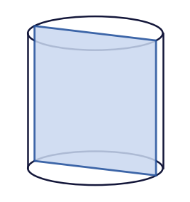

| Session | Questions | Tools | Points |
|---|---|---|---|
| 1 · The Number System; Expressions and Equations | 20 (1–20): 12 multiple choice, 3 select all, 4 short answer, 1 constructed response | No calculator; reference sheet | 23 |
| 2 · Ratios and Proportional Relationships; Geometry; Statistics and Probability | 20 (21–40): 12 multiple choice, 3 select all, 4 short answer, 1 constructed response | Calculator; reference sheet | 23 |
| # | Key | Domain | Skill | Standards |
|---|---|---|---|---|
| 1 | (C) 4 | Expressions and Equations | Solving Two-Step Equations | 7.EE.B.4a |
| 2 | (C) $31.23 | Expressions and Equations | Markup and Discount | 7.EE.A.2, 7.RP.A.3 |
| 3 | (A) x = 15 | Expressions and Equations | Solving Multi-Step Equations | 7.EE.B.4a, 8.EE.C.7b |
| 4 | (B) w = 2 5/8 | Expressions and Equations | Solving Equations by Adding or Subtracting Fractions | 7.EE.B.4a, 7.NS.A.1, 7.NS.A.3 |
| 5 | (B) 1/4, 0.375, 0.5, 3/5 | The Number System | Comparing and Ordering Rational Numbers | 7.NS.A.2d, 6.NS.C.7a |
| 6 | (A) n = 3 | The Number System | Multiplying and Dividing Integers | 7.NS.A.2a, 7.NS.A.2b |
| 7 | (B) -821/1000 | The Number System | Rational Numbers | 7.NS.A.2d, 6.NS.C.6 |
| 8 | (B) 117 | Expressions and Equations | Using Formulas | 7.EE.B.4, 6.EE.A.2c |
| 9 | (D) 135 | Expressions and Equations | Solving Equations by Multiplying Fractions | 7.EE.B.4a, 7.NS.A.2 |
| 10 | (C) 3(x + 6) | Expressions and Equations | Rewriting Expressions in Context | 7.EE.A.2 |
| 11 | (D) n = 8 | Expressions and Equations | Write an Equation | 7.EE.B.4, 7.EE.B.4a |
| 12 | (C) 128 ft | The Number System | Subtracting Integers | 7.NS.A.1c |
| 13 | Solve: p/1.5 = 26.13 → p = 39.195; Solve: m/0.5 = 16.28 → m = 8.14; Solve: 5.3a = 112.678 → a = 21.26 | Expressions and Equations | Solving Equations by Multiplying or Dividing Decimals | 7.EE.B.4, 6.EE.B.7 |
| 14 | Simplify: -2(k + 9) + 4k + 9 → 2k - 9; Simplify: 6(n - 5) + 3n + 1 → 9n - 29; Simplify: -4(k - 4) + 5k + 8 → k + 24 | Expressions and Equations | Simplifying Variable Expressions | 7.EE.A.1, 6.EE.A.4 |
| 15 | Solve: n/5 < 19 → n < 95; Solve: t/(-3) < 3 → t > -9; Solve: -8m ≤ -8 → m ≥ 1 | Expressions and Equations | Solving One-Step Inequalities by Multiplying or Dividing | 7.EE.B.4b |
| 16 | $16.04 | Expressions and Equations | Estimating Decimal Products and Quotients | 7.EE.B.3, 6.NS.B.3 |
| 17 | -23 | The Number System | Adding Integers | 7.NS.A.1b, 7.NS.A.1d |
| 18 | $29.48 | Expressions and Equations | Solving Equations by Adding or Subtracting Decimals | 7.EE.B.4, 6.EE.B.7 |
| 19 | 7.825 | The Number System | Fractions and Decimals | 7.NS.A.2d |
| 20 | 4-point constructed response | Expressions and Equations | Saving plans | |
| 21 | (C) 12 minutes | Ratios and Proportional Relationships | Write a Proportion | 7.RP.A.2c, 7.RP.A.3 |
| 22 | (C) 48 | Statistics and Probability | Counting Outcomes and Theoretical Probability | 7.SP.C.7a, 7.SP.C.8b |
| 23 | (D) 3 | Geometry | Similar Figures and Scale Drawings | 7.G.A.1 |
| 24 | (D) exactly one triangle | Geometry | Constructions | 7.G.A.2 |
| 25 | (C) 257° | Geometry | Angle Relationships and Parallel Lines | 7.G.B.5 |
| 26 | (C) rectangle | Geometry | Space Figures | 7.G.A.3 |
| 27 | (C) 113.0 cm² | Geometry | Area of Circles | 7.G.B.4 |
| 28 | (D) 7.5 | Statistics and Probability | Comparing Two Populations | 7.SP.B.3, 7.SP.B.4 |
| 29 | (A) independent | Statistics and Probability | Independent and Dependent Events | 7.SP.C.8a, S-CP.A.2 |
| 30 | (C) 13/19 | Statistics and Probability | Probability | 7.SP.C.5, 7.SP.C.7a |
| 31 | (D) 3 cups | Ratios and Proportional Relationships | Proportions | 7.RP.A.2, 7.RP.A.3 |
| 32 | (A) 10 meters | Geometry | Volumes of Prisms and Cylinders | 7.G.B.6, 8.G.C.9 |
| 33 | A circle has diameter 28 in. What is its radius? → 14 in.; A circle has diameter 37 in. What is its radius? → 18 1/2 in.; A circle has diameter 27 in. What is its radius? → 13 1/2 in. | Geometry | Circles | 7.G.B.4 |
| 34 | A 3-digit code uses digits 0–9, and no digit may repeat. How many codes are possible? → 720; A code uses 3 digits (0–9), and digits may repeat. How many codes are possible? → 1,000; A 4-digit code uses digits 0–9, and no digit may repeat. How many codes are possible? → 5,040 | Statistics and Probability | Counting Outcomes and Theoretical Probability | 7.SP.C.7a, 7.SP.C.8b |
| 35 | Find the volume of a rectangular prism 9.5 in. long, 3 in. wide, and 10 in. high. → 285 in³; Find the volume of a rectangular prism 7.5 in. long, 9 in. wide, and 4 in. high. → 270 in³; Find the volume of a rectangular prism 6.5 in. long, 12 in. wide, and 3 in. high. → 234 in³ | Geometry | Volumes of Prisms and Cylinders | 7.G.B.6, 8.G.C.9 |
| 36 | 200 | Statistics and Probability | Experimental Probability | 7.SP.C.6, 7.SP.C.7b |
| 37 | 132 m² | Geometry | Surface Area of Prisms and Cylinders | 7.G.B.6, 6.G.A.4 |
| 38 | $1050.00 | Ratios and Proportional Relationships | Simple and Compound Interest | 7.RP.A.3 |
| 39 | 468 cm² | Geometry | Surface Area of Pyramids, Cones, and Spheres | 7.G.B.6, G-GMD.A.3 |
| 40 | 4-point constructed response | Ratios and Proportional Relationships | Markup, sale and tax |

Mr. K’s Classroom · Grade 7 Practice Test A · Teacher key. Questions 1–19 and 21–39 come from the 7th Grade Math question banks, whose answer keys are recomputed in CI (verify_keys.py).